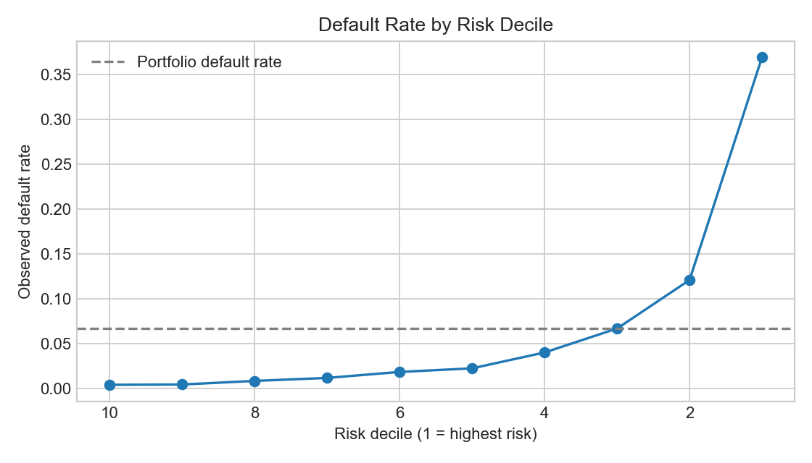
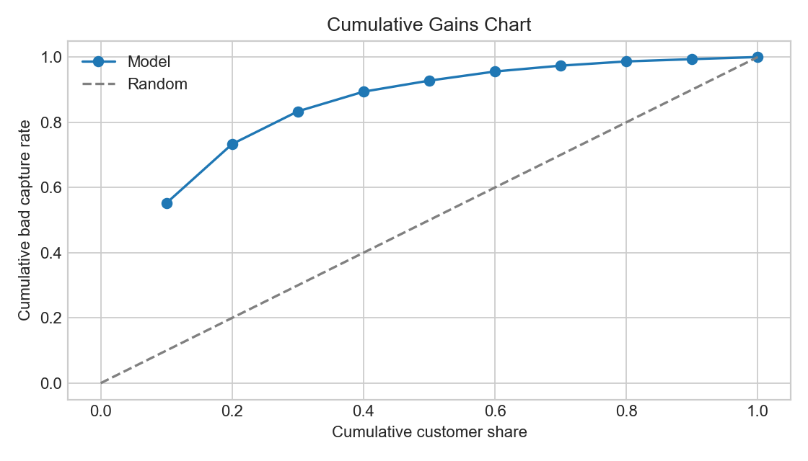
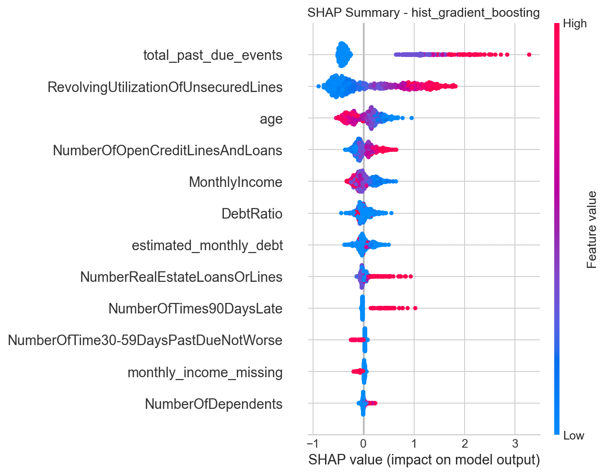
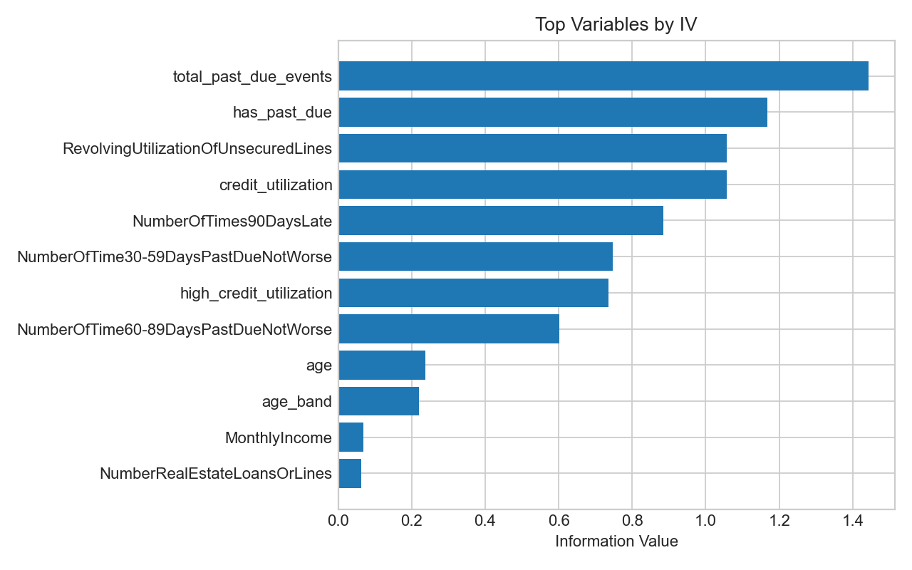
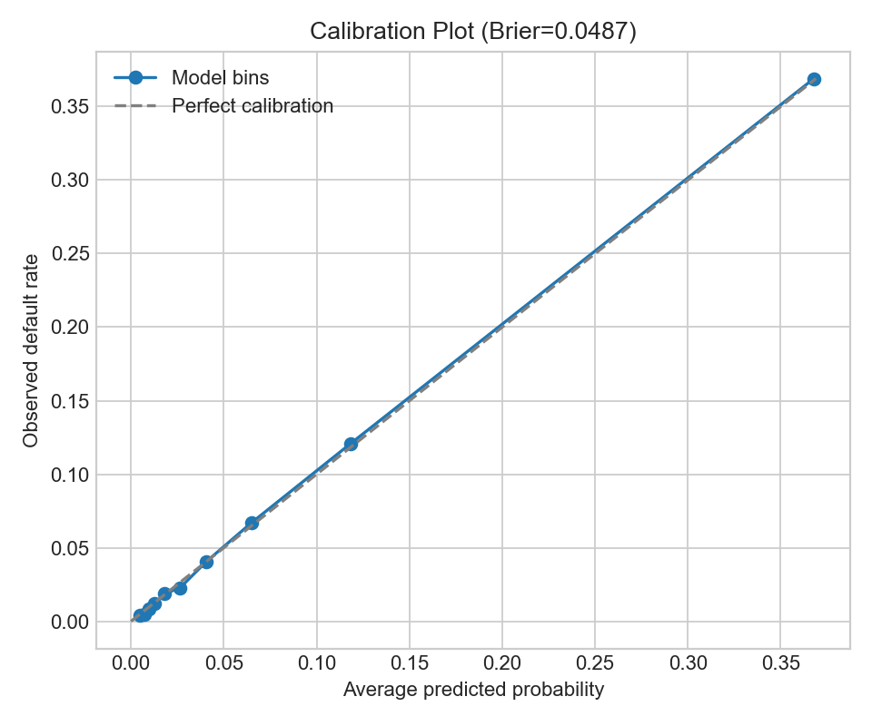
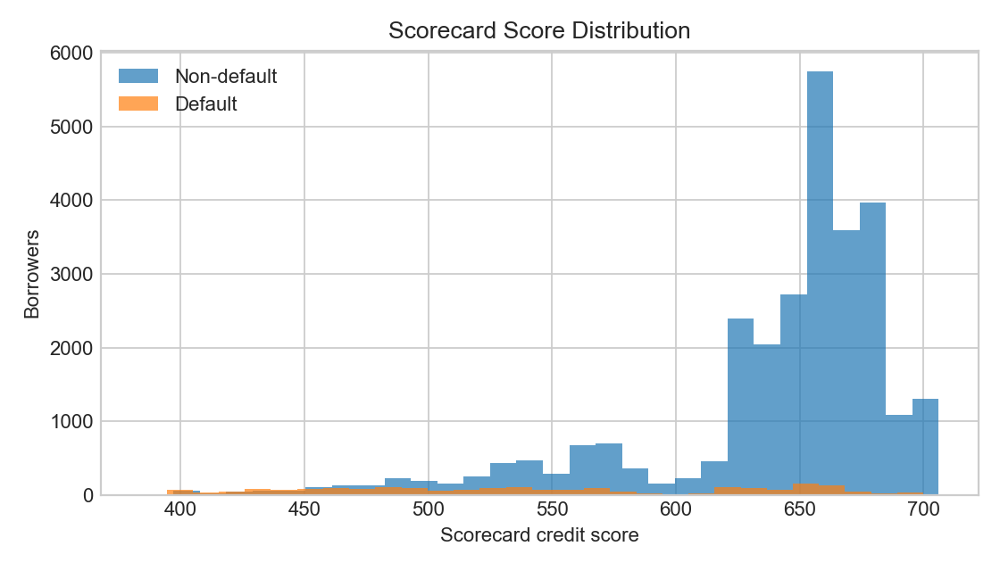

Champion Model
HGB
Hist Gradient Boosting
AUC
0.868
Champion model
KS
0.583
Good/bad separation
Top Decile Lift
5.52x
vs. portfolio default rate
Top 10% Bad Capture
55.21%
Observed defaulters captured
Executive Takeaway
The machine learning model ranks credit risk effectively: the highest-risk 10% of borrowers contain 55.21% of all observed defaulters. A WOE logistic scorecard benchmark is less predictive but more transparent, making the project useful for discussing the trade-off between model power and credit policy interpretability.
Model Comparison
| Model | AUC | KS |
|---|---|---|
| hist_gradient_boosting | 0.8684 | 0.5827 |
| random_forest | 0.8642 | 0.5823 |
| logistic_regression | 0.8632 | 0.5716 |
WOE Logistic Scorecard vs ML Champion
| Model | Role | AUC | KS |
|---|---|---|---|
| woe_logistic_scorecard | Traditional interpretable benchmark | 0.8262 | 0.5192 |
| hist_gradient_boosting | Machine learning champion | 0.8684 | 0.5827 |
Risk Ranking: Decile Lift

Cumulative Gains

High-Risk Concentration
| Risk Segment | Default Rate | Cumulative Bad Capture | Lift |
|---|---|---|---|
| Top 10% | 36.90% | 55.21% | 5.52x |
| Top 20% | - | 73.32% | 3.67x |
| Top 30% | - | 83.34% | 2.78x |
Scorecard Scaling
Base score: 600 PDO: 50
Higher score means lower predicted default risk. Test score range: 384 to 706.
Policy Use
- Route highest-risk decile to manual review.
- Use scorecard as interpretable benchmark.
- Use champion model for stronger risk ranking.
SHAP Risk Drivers

Information Value

Calibration

Scorecard Score Distribution

Approval Threshold Trade-off
| Threshold | Approval Rate | Rejection Rate | Approved Default Rate | Bad Capture Rate |
|---|---|---|---|---|
| 0.3 | 94.25% | 5.75% | 4.28% | 39.65% |
| 0.5 | 97.87% | 2.13% | 5.52% | 19.10% |
| 0.7 | 99.76% | 0.24% | 6.52% | 2.64% |
Low RiskAuto-approve borrowers with low predicted risk.
Medium RiskRoute to manual review or request additional verification.
High RiskReject, reduce exposure, or apply stronger terms.
Project Deliverables
Primary report: reports/portfolio_credit_risk_report.md or reports/risk_model_report.md. Reproducible pipeline: src/train_credit_default.py. Scorecard outputs and model diagnostics are stored in reports/.